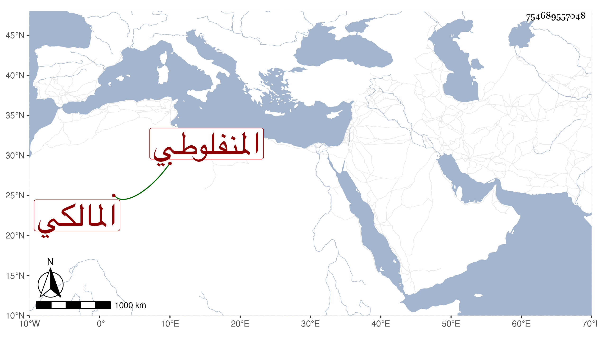

0902Sakhawi.DawLamic.ITO20230111-ara1.EIS1600.754689557048
Biography ID: 754689557048
561
فرج بن أحمد بن أبي بكر بن محمد بن حريز المنفلوطي المالكي ابن أخي الحسام والسراج وأبوه أصغر الثلاثة وهو أصغر أخويه إسماعيل ومحمد وإسماعيل أوجه وله نظم فمنه تخميس البردة وهو عند صاحبنا المحيوي القرشي وينوب في قضاء بناحيته ونحوها ، وهو سنة تسع وتسعين في الأحياء .
